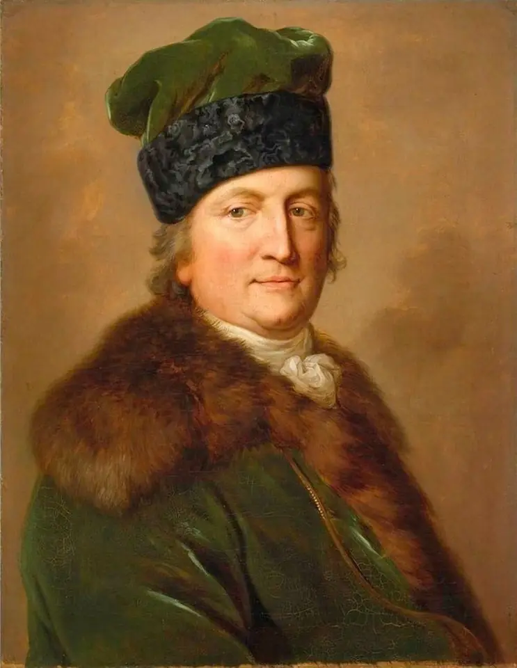

Posłowie i dyplomacja
Dawna ulica Polska (Leh Sokağı) – dziś Nur-i Ziya Sokağı
Uliczka przy İstiklal, która długo nazywała się Leh Sokağı – ulica Polska – i przez cały XIX wiek podtrzymywała wiarę, że polska ambasada w Stambule nigdy nie została zamknięta.


- Dzielnica
- Beyoğlu
- Okres
- 1788–1793 / 1877–1878
- Zwiedzanie
- Otwarte dla zwiedzających
Historia
Ta boczna uliczka przy İstiklal przez długie lata nosiła nazwę Leh Sokağı – ulica Polska – i przez cały XIX wiek mieszkańcy Pery wierzyli, że stała przy niej ambasada Polski.
Dawna Rzeczpospolita nie miała w Stambule stałej ambasady; każdy poseł wynajmował dom na czas misji. Ostatni z nich, Franciszek Piotr Potocki, był posłem w latach 1788–1793, a jego rezydencja – jak pisze turecka historyczka Hacer Topaktaş – stała najpewniej w Perze, czyli w dzisiejszym Beyoğlu. Uroczysty wjazd jego poselstwa do Pery uwiecznił malarz Luigi Mayer; obraz jest dziś w pałacu w Wilanowie. Dwa lata po wyjeździe Potockiego Polska zniknęła z mapy.
Nazwa ulicy przetrwała jednak rozbiory. To ona, zdaniem Topaktaş, podtrzymywała w XIX wieku przekonanie, że w Perze wciąż działa polska ambasada – choć żadnego oficjalnego polskiego przedstawicielstwa wtedy nie było. Jak pisał orientalista Jan Reychman, podczas wojny krymskiej za ambasadę brano też siedzibę Agencji Wschodniej księcia Czartoryskiego. W czasie wojny rosyjsko-tureckiej 1877–1878 gdzieś przy Leh Sokağı działało małe biuro, w którym zapisywali się polscy ochotnicy gotowi walczyć po stronie osmańskiej. W archiwum „Encyklopedii Stambułu” Reşada Ekrema Koçu zachowało się ogłoszenie z 1898 roku opisane hasłem „Polonya Sokağı” w Perze – najpewniej chodzi o tę samą ulicę.
Dziś nazywa się ona Nur-i Ziya Sokağı i biegnie wzdłuż ogrodów Pałacu Francuskiego. Żadna tablica nie przypomina o dawnej nazwie, a domu posła nigdy nie zidentyfikowano.




Jak zwiedzać
Nur-i Ziya Sokağı odchodzi od İstiklal Caddesi kilka kroków od bazyliki św. Antoniego i schodzi w stronę Tomtom; po jednej stronie ciągnie się mur Pałacu Francuskiego (konsulatu Francji). Przejdź uliczkę w dół i z powrotem – to kilka minut spaceru. Pinezka wskazuje ulicę, nie budynek.
Postaci
- Franciszek Piotr Potocki
- Luigi Mayer
- Jan Reychman
- Adam Jerzy Czartoryski
Położenie
Beyoğlu, Stambuł · Współrzędne: 41.03176, 28.97746